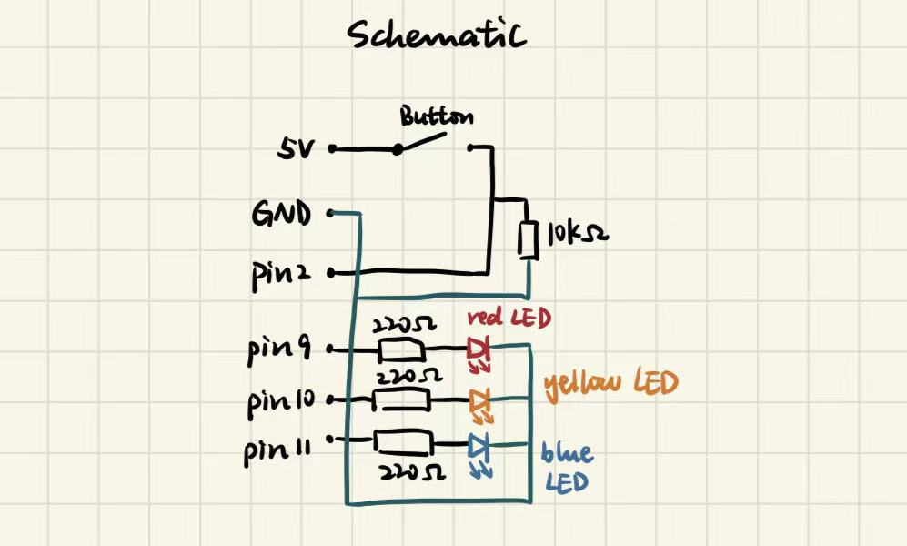
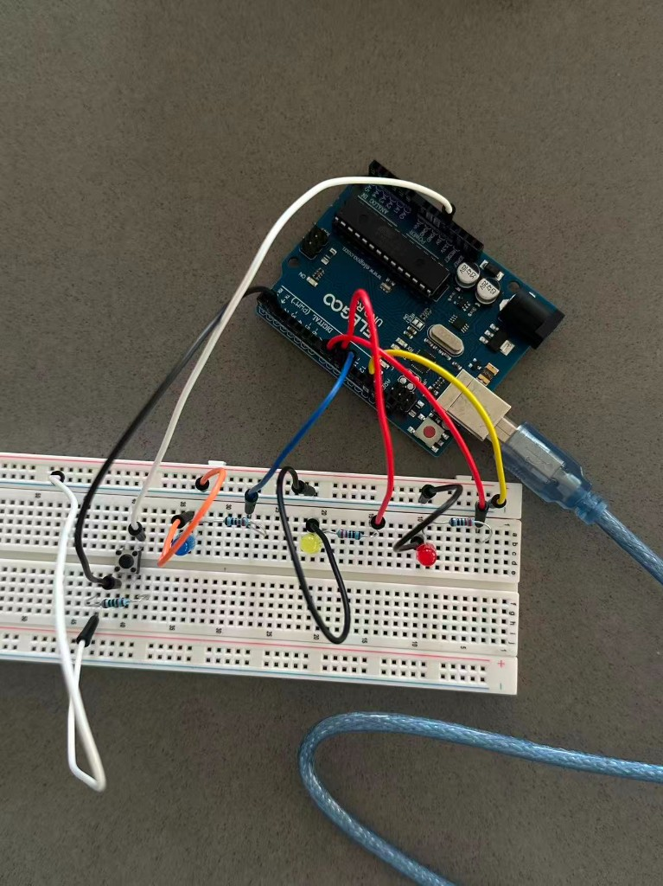
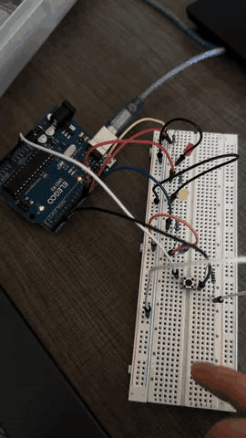
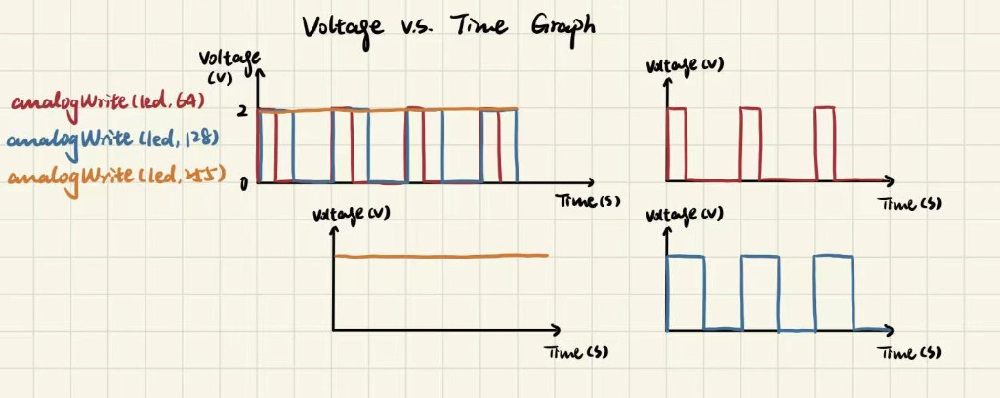

For this assignment, I built a light-up toy with an Arduino Uno, a button and three LEDs: red, yellow, and blue. While I hold the button, the red LED fades on and then fades off. After that, the yellow LED flashes once, and then the blue LED flashes once. If I let go of the button, the pattern stops and the lights turn off.


I wired it to match the schematic and the pin numbers in my code:
I used 5V from the Arduino and a target LED current of 20mA (0.02A).
R = (Vsupply − Vforward) / I
Red LED: R = (5V − 2.0V) / 0.02A = 150Ω
Yellow LED: R = (5V − 2.0V) / 0.02A = 150Ω
Blue LED: R = (5V − 3.3V) / 0.02A = 85Ω
I chose 220Ω resistors for all three LEDs because they keep the current below my 20mA target. With those resistors, the estimated current is:
For the button, I used a 10kΩ pull-down resistor.
I = 5V / 10,000Ω = 0.5mA
The pull-down keeps pin 2 at LOW when the button is not pressed. When I press the button, pin 2 reads HIGH. The 10kΩ resistor also keeps the current through that path low.
I used digitalRead() to check the button, analogWrite() and for loops to fade the red LED, and digitalWrite() to turn the yellow and blue LEDs on and off.
// Define the button input pin.
const int buttonPin = 2;
// Define the red LED pin.
const int redPin = 9;
// Define the yellow LED pin.
const int yellowPin = 10;
// Define the blue LED pin.
const int bluePin = 11;
// Run setup once when the Arduino starts.
void setup() {
// Set the button pin as an input.
pinMode(buttonPin, INPUT);
// Set the red LED pin as an output.
pinMode(redPin, OUTPUT);
// Set the yellow LED pin as an output.
pinMode(yellowPin, OUTPUT);
// Set the blue LED pin as an output.
pinMode(bluePin, OUTPUT);
}
// Repeat the toy's light pattern.
void loop() {
// Check whether the button is pressed.
if (digitalRead(buttonPin) == HIGH) {
// Fade the red LED from off to full brightness.
for (int brightness = 0; brightness <= 255; brightness += 5) {
// Stop the fade if the button is released.
if (digitalRead(buttonPin) == LOW) {
// Exit the fade-in loop.
break;
}
// Set the red LED brightness using PWM.
analogWrite(redPin, brightness);
// Wait briefly to make the fade visible.
delay(15);
}
// Fade the red LED from bright to off.
for (int brightness = 255; brightness >= 0; brightness -= 5) {
// Stop the fade if the button is released.
if (digitalRead(buttonPin) == LOW) {
// Exit the fade-out loop.
break;
}
// Set the red LED brightness using PWM.
analogWrite(redPin, brightness);
// Wait briefly to make the fade visible.
delay(15);
}
// Turn off the red LED before the next step.
digitalWrite(redPin, LOW);
// Check the button again before lighting yellow.
if (digitalRead(buttonPin) == HIGH) {
// Turn on the yellow LED.
digitalWrite(yellowPin, HIGH);
// Keep yellow on briefly.
delay(250);
// Turn off the yellow LED.
digitalWrite(yellowPin, LOW);
}
// Check the button again before lighting blue.
if (digitalRead(buttonPin) == HIGH) {
// Turn on the blue LED.
digitalWrite(bluePin, HIGH);
// Keep blue on briefly.
delay(250);
// Turn off the blue LED.
digitalWrite(bluePin, LOW);
}
}
// Turn off the red LED when the sequence ends.
digitalWrite(redPin, LOW);
// Turn off the yellow LED when the sequence ends.
digitalWrite(yellowPin, LOW);
// Turn off the blue LED when the sequence ends.
digitalWrite(bluePin, LOW);
}

I used the red LED as the example, with an estimated forward voltage of 2.0V. analogWrite(led, 64) is about a 25% duty cycle, analogWrite(led, 128) is about 50%, and analogWrite(led, 255) is 100%. The PWM value changes how long the LED stays on during each cycle, which changes how bright it looks. The graph is idealized, and the actual voltage across the LED can vary.
If all three LEDs were on at the same time, their estimated total current would be:
Total = 13.6 + 13.6 + 7.7 = 34.9mA
This is below the ATmega328P's 200mA absolute maximum supply-current rating, although that is not a recommended operating target. The Arduino board itself also uses current.
For a 1200mAh battery:
Battery life = 1200mAh / 34.9mA ≈ 34.4 hours
This is only an ideal estimate based on the LEDs. The actual runtime would be shorter because the Arduino and other parts of the circuit also consume power.
I measured the voltage across my red LED with a multimeter while it was fully on.
The measured voltage was 1.82V, compared to the estimated forward voltage of 2.0V.
Difference: 2.0V − 1.82V = 0.18V
Percentage difference: (0.18 / 2.0) × 100% = 9%
The measured voltage was about 9% lower than the theoretical estimate. This makes sense because the forward voltage can vary depending on the LED, current and temperature.
Yes, I used ChatGPT to help me understand check my resistor calculations, and troubleshoot my circuit and code. I also used it to help organize my written answers. I used Cursor to help build my portfolio webpage and keep the layout consistent with A1.